Two cameras, one picture. CFFM-Net fuses a visible and a thermal camera with a selective
state-space scan, and decides, at every location, which camera to trust. Every subject is bracketed,
numbered and logged.
Drop a visible and a thermal image of the same scene, or click a sample. Ordinary photos go to the general YOLO26-n (80 COCO classes), drawn the same way.
ready
backend
The page calls a Gradio app (demo/app.py). Run it locally or point this at a Hugging Face Space.
02 Tracking a crowd
MOT17-04, a pedestrian street at night filmed at 30 fps, with ByteTrack. Each subject keeps its number, a trail of where it walked and an arrow for where it is heading. Visible footage, so the general YOLO26-n runs here.
03 What we found
The same night scene with each camera failing. Both fusion models keep working on thermal alone.
With the thermal camera off, both find no one, although the people are plainly visible. This is the
main weakness to fix next.
Holds up when thermal drifts
With the thermal image shifted 4 or 8 px, CFFM-Net keeps
+1.7 and +2.9 AP over the concat baseline. Told that thermal is gone, it still scores 0.17, where concat
collapses to 0.003.
Trust follows the light, weakly
Across 300 test frames, darker scenes lean on thermal
(correlation −0.50 on both datasets). The fusion weights stay between 0.46 and 0.52, so the gate learned
the right direction but responds weakly.
The gate absorbs a darkened camera
With the visible image darkened, the reliability gate alone
is worth +5.6 AP (0.599 against 0.542 for the same network without it).
Not yet ahead on clean images
The pilot trails simple concatenation by 2.1 AP on
LLVIP. Matching the detection head closes most of that gap. Trained the same way with modality dropout, v2 leads
concat on M3FD by +0.5 AP (0.488 against 0.482), which is within noise. An 80-epoch round is training now.
04 Pilot results
COCO AP50-95 on the full test sets, one seed, YOLO26-n backbones, 30 epochs. Higher is better.
model
LLVIP
M3FD
params
latency (T4)
visible camera only
0.520
–
2.5 M
17 ms
thermal camera only
0.641
–
2.5 M
17 ms
two-stream concat
0.650
0.505
4.1 M
23 ms
CFFM-Net
0.629
0.479
6.0 M
42 ms
CFFM-Net, no reliability gate
0.626
–
6.0 M
41 ms
CFFM-Net, gated conv instead of scan
0.628
–
6.2 M
35 ms
round 2 · both trained with modality dropout · standard head
two-stream concat + dropout
0.652
0.482
4.1 M
23 ms
CFFM-Net v2 + dropout
rerun
0.488
6.0 M
–
05 Where it comes from
The two families CFFM-Net is built from, redrawn from the original papers in one visual language.
Blue is the visible camera, orange the thermal camera, purple the selective scan, gold the detection heads.
YOLO, from one grid to YOLO26
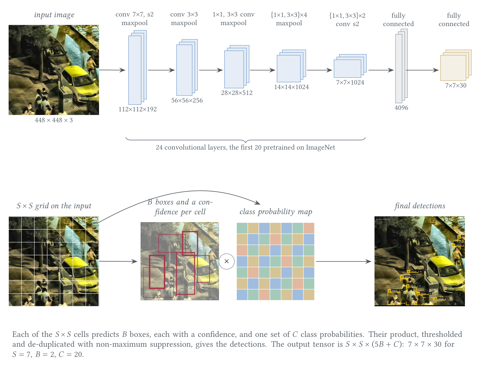
YOLOv1, after Redmon et al. (2016): one network, one pass, an S×S grid that predicts boxes and classes.
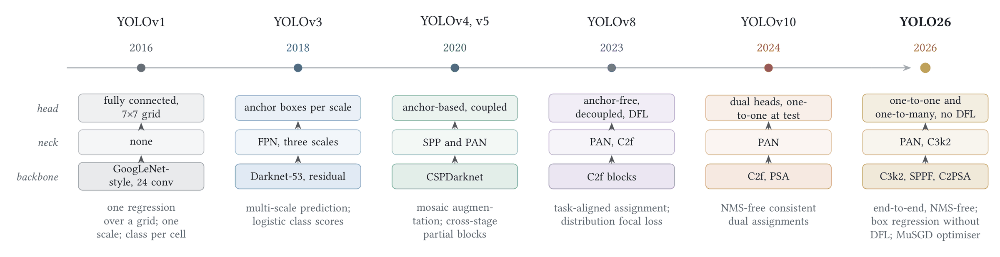
Ten years of YOLO: backbone, neck and head, and the one change that defines each generation, ending at the NMS-free, DFL-free YOLO26.
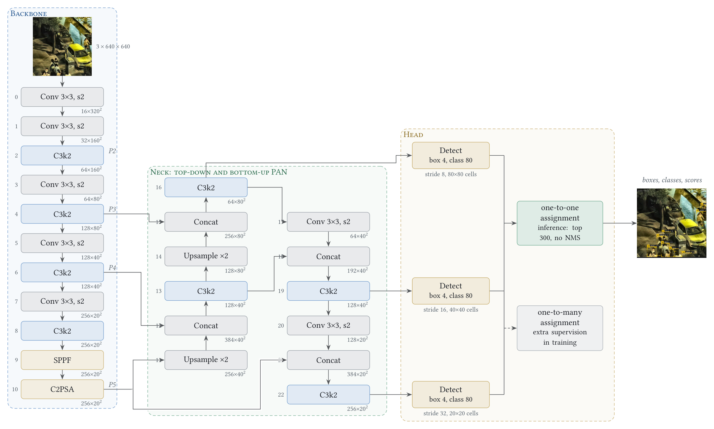
YOLO26-n as used here, with every layer index and measured shape at 640 px. Training uses two heads: one-to-many and one-to-one. Inference uses only the one-to-one head, so there is no NMS.
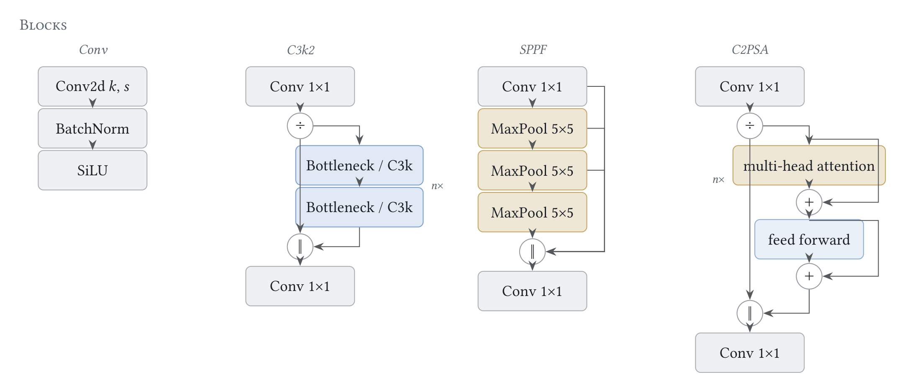
The four repeated blocks: Conv, C3k2, SPPF and C2PSA.
State-space models and Mamba
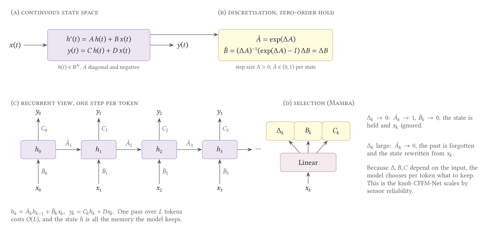
From a continuous state-space model to a selective scan, after S4 and Mamba. Making the step Δ depend on the input lets the model choose what to keep.
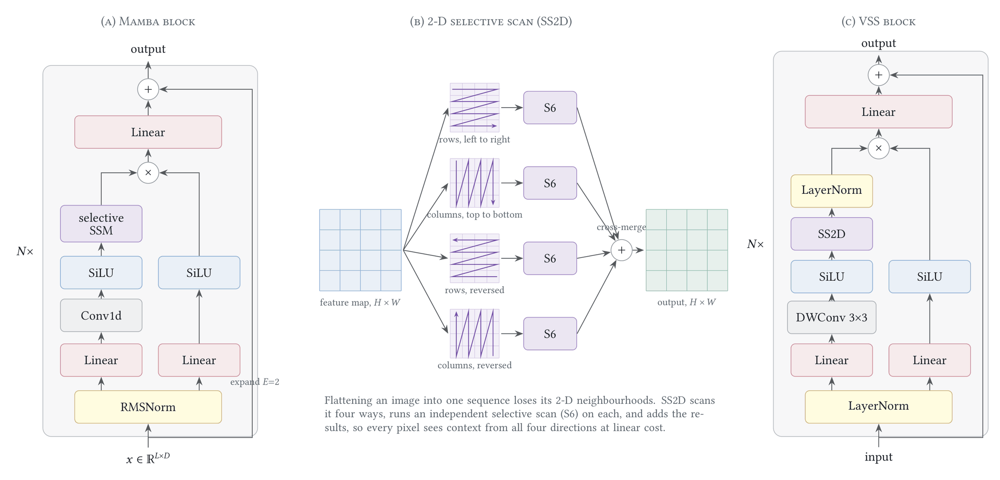
The Mamba block, VMamba's four-way cross-scan (SS2D) and the VSS block that wraps it.
06 How it works
CFFM-Net as trained, drawn with the real activations of one LLVIP test pair. The two backbones never mix;
they meet only in the fusion blocks, where each token's scan step is scaled by how reliable its camera is there.
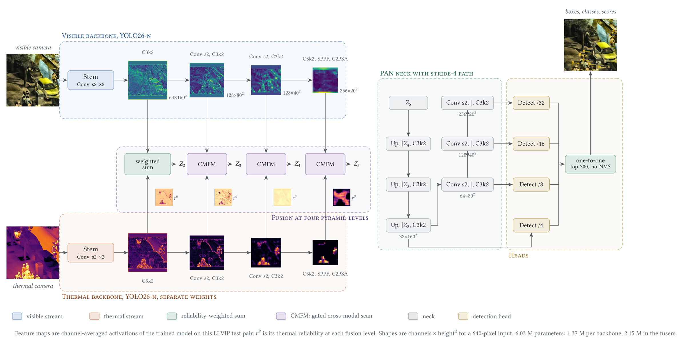
Two YOLO26-n backbones, a reliability-weighted sum at P2, the cross-modal fusion Mamba block at P3 to P5, the YOLO26 neck and heads. The small maps are the thermal reliability at each level. 6.03 M parameters, 18.4 GFLOPs.
The same network in compact form: one stage per stream, fused at each level.The fusion block: reliability head, alignment, interleaved tokens, gated scan, zero-initialised output.Reliability scales each token's step. A camera with zero reliability cannot write into the state.
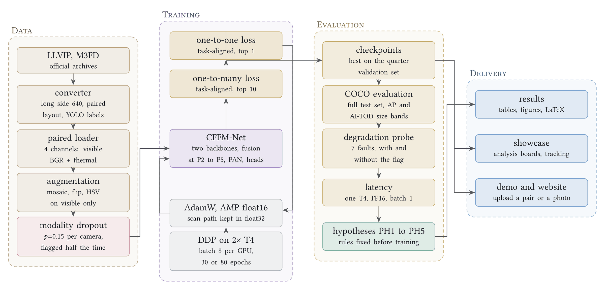
From raw archives to verdicts: paired conversion, shared augmentation, modality dropout, two YOLO26 losses, FP32 scan under AMP, then COCO AP, the sensor-fault probe, latency and the pre-registered decisions.
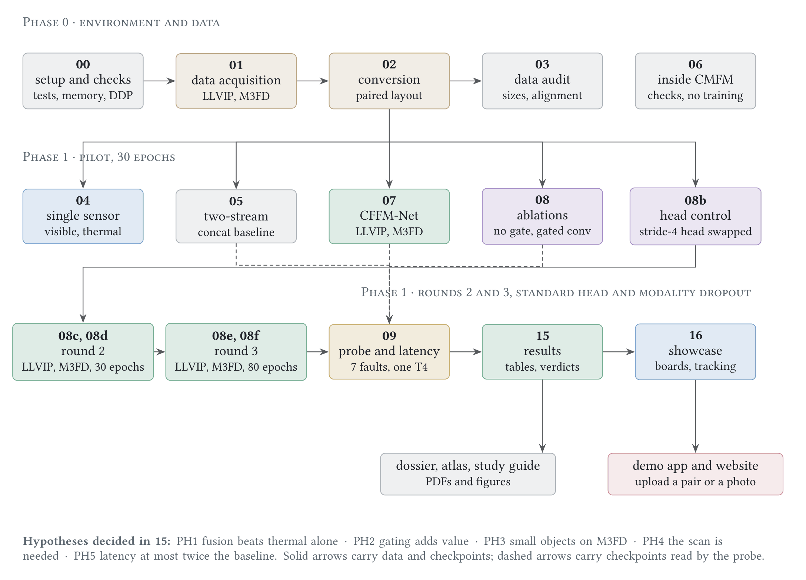
The notebooks and how their outputs flow, each one an independent Kaggle session.
07 The whole project
Still images are Phase 1. Phase 2 adds memory across frames and tracking. Phase 3 adds live cameras, and
Phase 4 combines several cameras into anonymous counts.
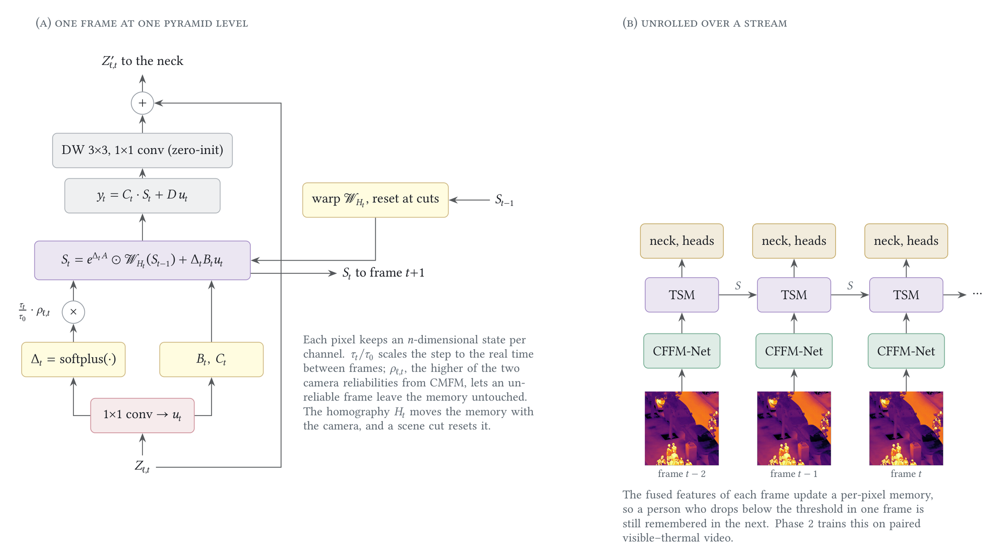
The Temporal State Memory of Phase 2. A per-pixel state is carried from frame to frame. Its step is scaled by the real time gap and by reliability, it is warped with the camera, and it resets at scene cuts. It is built and tested, and training it comes next.
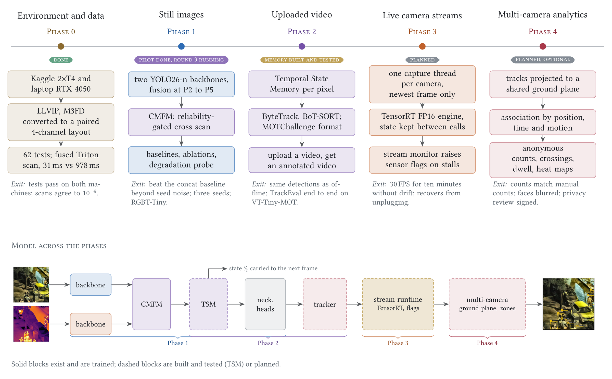
All five phases, with what each delivers, the test it must pass, and how the model grows from phase to phase.
Every diagram, with the reasoning behind it, is collected in the Architecture Atlas (PDF). The code, tests and notebooks are on GitHub.